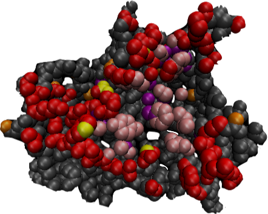

hi, i'm matthew kim.
I'm a sophomore studying CS at the University of Pennsylvania, interested in the applications of software development and data science.
What I'm currently learning: React
skills
General Purpose
Java, Javascript, Python, C
Web
HTML, CSS
Open Source
Numpy, Pandas, Scikit-Learn, Matplotlib, Scipy, Pytorch
Data & Databases
AWS (DynamoDB), Map Reduce
education
University of Pennsylvania
2018-2022, 3.96 GPA
Pursuing a BSE in Computer Science and Minor in Data Science in the School of Engineering and Applied Sciences.
Montgomery High School 
2014-2018, 97.42 GPA
Graduated top 10% of class. Involved in Model UN and Science Olympiad.
experience
Teaching Assistant, MCIT 593: Introduction to Comptuer Systems, University of Pennsylvania
August 2019 - Present · Philadelphia, PA
- Teaching Assistant for MCIT 593, Introduction to Computer Systems.
- Held weekly office hours to assist students in toopics such as computer systems architecture, low-level programming and programming in C; graded homework and exams.
Research Intern, Chemical and Biomolecular Engineering Department at the University of Pennsylvania
May 2019 - August 2019 · Philadelphia, PA
- Conducted research in the Patel Group to better understand the hydrophobicity of proteins and protein-protein interfaces.
- Developed algorithm in Python using Scipy to cluster atoms in a protein by first binning atoms based on their susceptibility to dewetting and then traversing their nearest neighbors.
- Developed a machine learning model using neural networks with Pytroch to classify atoms that were predicted to be a part of a protein-protein interface as true or false positives.
- Leveraged the HyperSearch API to optimize hyperparameters of the model.
Research Intern, Civil and Environmental Engineering Department at Princeton University 
June 2017 - August 2017 · Princeton, NJ
- Analyzed the relationship between dust optical depth and precipitation over Australia during the El Niño-Southern Oscillation Phenomenon to better understand the effect of natural aerosols on hydrology.
- Used Python and packages such as Numpy, Pandas, Scikit-learn, and Matplotlib to access and process data from +10,000 NASA HDF5 and net-CDF4 satellite data files.
projects
Protein-Protein Interface Filtering
Developed naive and machine learning approach to filtering out false protein-protein interface predictions. Developed clustering algorithm to consider both spatial and chemical properties of atoms.
Technologies Used: Python, Pandas, Scipy, Pytorch, VMD
All-NBA Team Prediction
Develop a machine learning model using SVMs to predict the All-NBA teams. Building web app that visualizes probability that NBA player makes the the All-NBA team for this upcoming year.
Technologies Used: Python, Pandas, Scikit-Learn, MatplotLib, Seaborn